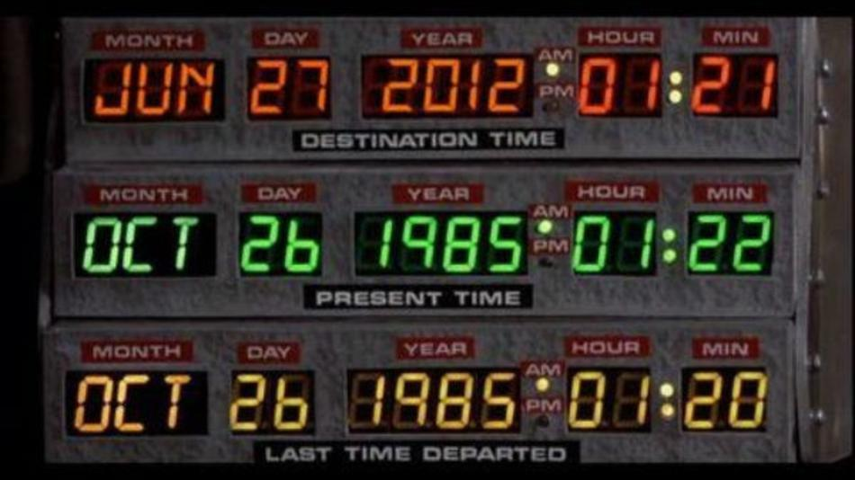
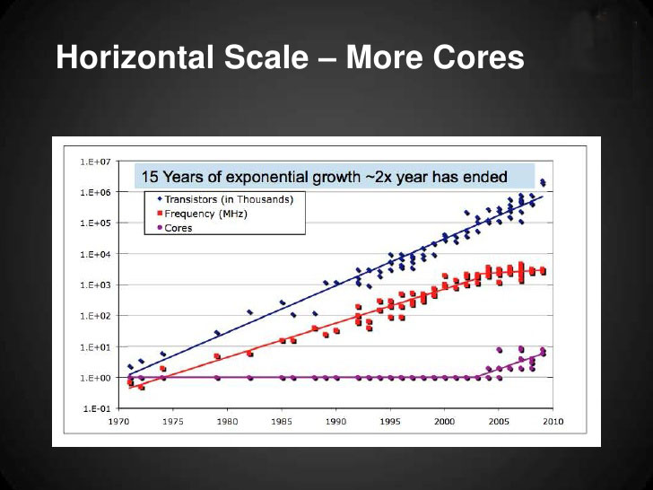

Real Time Analytics with Akka & MongoDB
Tech Talk
- Juan Marin
January 2013
What is real time?
It's all relative

But we can probably agree:
- Reactive
- Operational deadlines --> available "soon"
- Order of magnitude ~ milliseconds
Being fast is important
Big Data Analytics
I had to write that because it sounds cool
But seriously...
- 90% of total data volume in the history of mankind has been produced in the last 2 years
- As of late 2012, "Big Data" usually describes data sets from several dozen terabytes to petabytes
- Guess What? A lot of that data is geospatial...
Big Data
When the Sloan Digital Sky Survey (SDSS) began collecting astronomical data in 2000, it collected more information in the first weeks of operation than in the whole history of astronomy. Total amount ~ 140TB
Bigger Data
When the Large Synoptic Survey Telescope (LSST), successor to SDSS, comes online in 2016 it is anticipated to acquire that amount of data every 5 days
It happens in our field too
FCC's Broadband Map, first 24 hours:
- Total hits:158,123,884
- Hits served by cache: 141,068,348 (89.21%)
- Total data transferred: 863 GB
- Peak requests per second: 8,970
- Average requests per second: 1,095
- Unique visitors, first 10 hours: ~500,000
How can we derive real time statistics from request data?
We will need:
- A fast way to persist raw request data for further analysis
- A fast way to process (aggregate) the incoming stream of data
- A fast way to query and deliver information, both historic and real time
Akka and MongoDB is a possible solution
Akka is a toolkit and runtime for building highly concurrent, distributed, and fault tolerant event-driven applications on the JVM
Concurrency
Hard to deal with
Moore's Law
Concurrency can no longer be ignored
Akka has actors
Actors are cool
Akka Actors
Actors are objects which encapsulate state and behavior, they communicate exclusively by exchanging messages which are placed into the recipient's mailbox
public class Greeting implements Serializable {
public final String who;
public Greeting(String who) { this.who = who; }
}
public class GreetingActor extends UntypedActor {
LoggingAdapter log = Logging.getLogger(getContext().system(), this);
public void onReceive(Object message) throws Exception {
if (message instanceof Greeting)
log.info("Hello " + ((Greeting) message).who);
}
}
ActorSystem system = ActorSystem.create("MySystem");
ActorRef greeter = system.actorOf(new Props(GreetingActor.class), "greeter");
greeter.tell(new Greeting("Charlie Parker"));
In Scala too (*)
case class Greeting(who: String)
class GreetingActor extends Actor with ActorLogging {
def receive = {
case Greeting(who) ⇒ log.info("Hello " + who)
}
}
val system = ActorSystem("MySystem")
val greeter = system.actorOf(Props[GreetingActor], name = "greeter")
greeter ! Greeting("Charlie Parker")
(*) Which is the language you should be using for this stuff
Why Actors?
Message passing style concurrency
Asynchronous, event driven programming model
Oh, and they are tiny (2.7 million / GB of RAM)
Akka is distributed
Location Transparency
Designed for distribution, local deployment is an optimization
akka {
actor {
provider = "akka.remote.RemoteActorRefProvider"
}
remote {
transport = "akka.remote.netty.NettyRemoteTransport"
netty {
hostname = "127.0.0.1"
port = 2552
}
}
}
Let it Crash
By the way, this Aikido technique is called Koshinage
Fault Tolerance
Supervision Hierarchy --> Every actor has a parent. Parents take care of children, do something when they misbehave (stop, restart, etc.)
Encourage few top level actors (dhildren of ActorSystem), create your own actors as children of other actors
Futures
Akka Futures
"Data structures to retrieve the result of a concurrent operation. Results can be retrieved synchronously or asynchronously"
Higher abstraction than Java Futures, but uses java.util.concurrency under the hood
This is where you really want to use Scala
Seriously
Futures compose
List<Future<List<RequestStats>>> futures = new ArrayList<Future<List<RequestStats>>>();
ExecutionContext ec = getContext().system().dispatcher();
futures.add(future(new ServiceStatsProcessor(payload), ec));
futures.add(future(new LayerStatsProcessor(payload), ec));
futures.add(future(new GeoStatsProcessor(payload), ec));
futures.add(future(new ReferrerProcessor(payload), ec));
futures.add(future(new IpStatsProcessor(payload), ec));
// compose a sequence of the futures
Future<Iterable<List<RequestStats>>> futuresSequence = sequence(futures, ec);
// block until the futures come back
log.debug("Processing messages");
Iterable<List<RequestStats>> results = futuresSequence.result(
Duration.create(30, TimeUnit.SECONDS), null);
log.debug("Finished Processing messages");
Apache Camel Integration
public class HttpConsumer extends UntypedConsumerActor implements Consumer {
@Override
public void onReceive(Object obj) throws Exception {
if (obj instanceof CamelMessage) {
CamelMessage camelMessage = (CamelMessage) obj;
String json = camelMessage.withBodyAs(String.class, getCamelContext())
.body()
.toString();
Payload payload = mapper.readValue(json, Payload.class);
if (!messageValidator.isValid(payload))
throw new Exception("Payload is not valid");
log.debug("Message received and validated: " + payload);
getContext().system().eventStream().publish(payload);
getSender().tell("OK", getSelf());
}
}
}
Storage
Some nice features:
- Document-oriented storage, flexible schemas (NoSQL)
- Very fast performance (less consistent than a RDBMS)
- Replication and High Availability
- Auto-Sharding: "easy" to scale horizontally on cheap hardware
- Map/Reduce: very powerful analysis and aggregation capabilities
- Some Geospatial support (pretty crude vs. PostGIS, but improving)
Fast In-Place Updates
Let's take a look at this document
> db.message.find().limit(1).next()
{
"_id" : ObjectId("50f56c09a0ee0faee89ac02e"),
"id" : 1,
"url" : "/sf/wms?REQUEST=GetFeatureInfo&EXCEPTIONS=application/vnd.ogc.se_xml&BBOX=580603.926345,4908503.524255,617593.971633,4932489.256747&SERVICE=WMS&INFO_FORMAT=text/html&QUERY_LAYERS=sf:archsites&FEATURE_COUNT=50&Layers=sf:archsites&WIDTH=512&HEIGHT=332&format=image/png&styles=&srs=EPSG:26713&version=1.1.1&x=303&y=211",
"http_referer" : "http://console.dev.opengeo.org/geoserver/sf/wms?service=WMS&version=1.1.0&request=GetMap&layers=sf:archsites&styles=&bbox=589851.4376666048,4914490.882968263,608346.4603107043,4926501.8980334345&width=512&height=332&srs=EPSG:26713&format=application/openlayers",
"request_method" : "GET",
"request_length" : 0,
"request_content_type" : null,
"response_status" : 200,
"response_length" : 938,
"response_content_type" : "text/html",
"category" : "OWS",
"service" : "WMS",
"operation" : "GetFeatureInfo",
"sub_operation" : null,
"ows_version" : "1.1.1",
"start_time" : 1353026628,
"duration" : 652,
"server_host" : "console.dev.opengeo.org",
"internal_server_host" : "console",
"remote_address" : "208.120.178.170",
"remote_host" : "user-387hcla.cable.mindspring.com",
"remote_user_agent" : "Mozilla/5.0 (X11; Linux x86_64; rv:16.0) Gecko/20100101 Firefox/16.0",
"remote_user" : null,
"remote_longitude" : -73.9319000244141,
"remote_latitude" : 40.7610931396484,
"bbox" : null,
"error" : null,
"resources" : [ ],
"mem_usage" : -1,
"mem_total" : -1,
"load" : -1,
"date" : ISODate("2012-11-16T00:43:48Z"),
"api_key" : "opengeo_demo"
}
We can aggregate them this way
> db.request_hour.find().limit(1).next()
{
"_id" : "opengeo_demo_1353024000",
"api_key" : "opengeo_demo",
"date" : NumberLong(1353024000),
"error_count" : 0,
"ip" : {
"208_120_178_170" : {
"error_count" : 0,
"request_count" : 7,
"response_size" : 6489,
"response_time" : 1946
}
},
"location" : {
"dr5r" : {
"request_count" : 7,
"request_error" : 0,
"response_size" : 6489,
"response_time" : 1946
}
},
"referrer" : {
"console_dev_opengeo_org" : {
"error_count" : 0,
"request_count" : 7,
"response_size" : 6489,
"response_time" : 1946
}
},
"request_count" : 7,
"response_size" : 6489,
"response_time" : 1946,
"service" : {
"wms" : {
"error_count" : 0,
"request_count" : 7,
"response_size" : 6489,
"response_time" : 1946
}
}
}
So that queries become this easy
db.request_hour.find({ "date" : { "$gte" : 1352980800 , "$lte" : 1353168000} , "api_key" : "opengeo_demo"})
All this is possible thanks to the Upsert with Increment operation
db.request_hour.update(
{_id: "opengeo_demo_1234567890"},
{ "$set" : {
"date" : 1352911141 ,
"api_key" : "1234567890"} ,
"$inc" : {
"request_count" : 1 ,
"error_count" : 0 ,
"response_size" : 3826 ,
"response_time" : 68 ,
"service.wms.request_count" : 1 ,
"service.wms.error_count" : 0 ,
"service.wms.response_size" : 3826 ,
"service.wms.response_time" : 68
}
},
{ upsert: true }
}
So, how well does it work?
OpenGeo Console
- 1.5 million requests aggregated on the fly, in 1.5 months (OpenGeo Suite Demo Server)
- Console Dev server is a VM with 2GB of RAM, hosting both the application and MongoDB
- No optimizations to Akka or MongoDB deployment yet (but will be needed)
- Very fast development (but we should have gone with Scala)